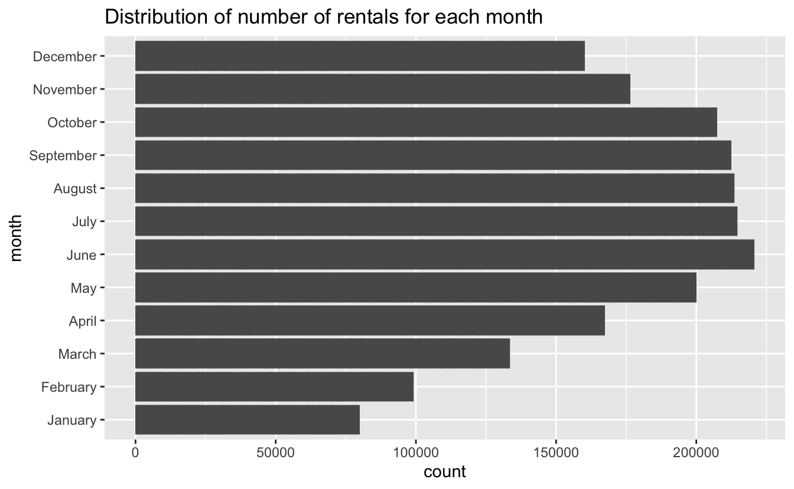
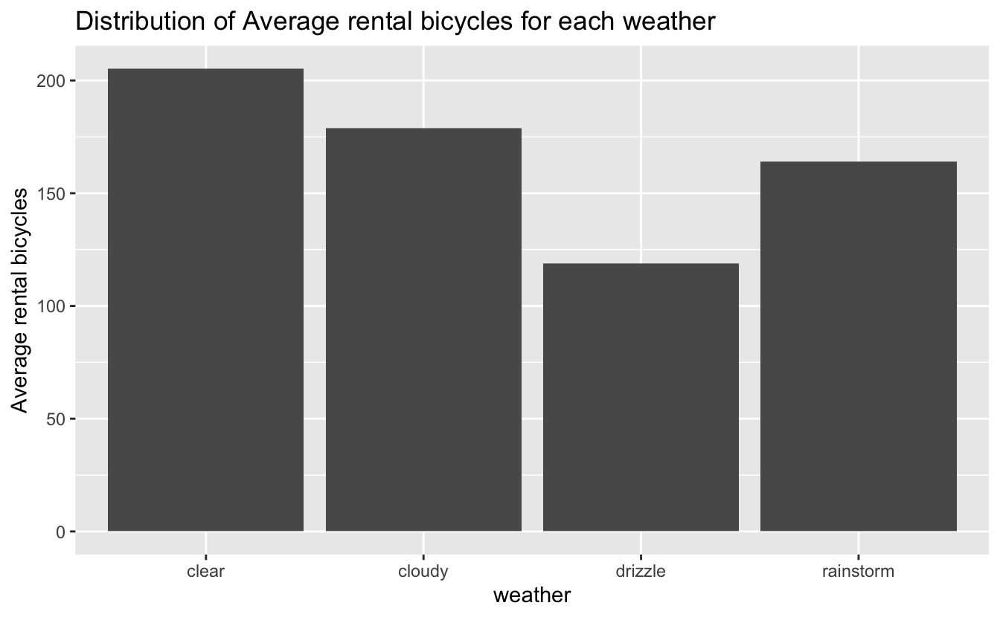

Bike sharing system is a shared transport service in which bicycles are made available for shared use to individuals. Recently bike-sharing companies have become one of the hottest tech companies in the world especially in china, there are over 500 bike-sharing programs around the world. In this project, we will use data generated from a bike-sharing app in Washington D.C, these apps generate a large amount of data on a daily basis and are important for studying the customer travel demand and their local road system. We aim to make deep analysis to investigate which factors contributing to bike rental demand.
The customers who uses this app are divided into two groups; causal user and registered user. The main difference is that registered users do not have restrictions on the number of rides they can take, while for casual users, once they return their bicycle, they can no longer re-take it unless they pay additional money. Meanwhile, registered users take their bike for free, while casual user need to pay for a one-way trip.
Let’s start to explore which factors contribute to bicycle rental demands. The following plot shows summary statistics for the number of total rentals in each hour period. We could observe that on average 191.6 people rent a bike each hour. However, the maximum number of customers for each hour is 977, while the minimum is only 1. This suggests time might be a factor contributing to the amount of rentals.
| mean | median | min | max |
|---|---|---|---|
| 191.6 | 145 | 1 | 977 |
The following scatter plot shows relationship between hour and average bicycle rent for two group of customer, it is clear that the average bicycle rent for membership of bikeshare app is much higher than its for causal user, indicating the registered user have higher demand than causal user, it is reasonable since they could rent the bike with cheaper price.
In terms of the month dimension, the demand for orders appears in an annual cycle: the demand for bikes starts to rise in the spring of each year, reaches and remains at a peak level in the summer and fall, and then starts to fall back in the winter, which suggests the daily temperature and weather could be potential factors contributing to demand for rental.

We made several analysis and found the temperature could be a potential factor influencing bicycle rental demand, we want to further explore Which group of customers is more affected by temperature, we could notice both causal user and member follows the same trend. the plot shows a strong linear relationship between number of rental bicycles and temperature, as the temperature increases, the demands for bicycles rentals increases, but when temperatures is above 36 degrees, the situation changes a bit. The trend begins to move in the opposite direction.
To further explore the influence of temperature on demand for rental bike, we create the following scatter plot separated by each hour. We found the temperature has huge influence in commuting hour including 17, 18, indicating temperature might be a potential factor for people’s decision whether they ride their bikes to work.
Hence, the variable hour is separated into two group, one is commuting hour including 7, 8, 9, 16, 17, 18, 19, the other is non-commuting hour, and I plot a scatter plot showing the relationship between average rental bike and temperature in two time stamp. The plot indicating a different trend between two time stamp. The temperature has much larger influence on bicycle demand in commuting time, which verify my previous assumption. Meanwhile, when temperature is above 36 degree, there is a huge decrease on bicycle demand for commuting time, while we saw an increase in bicycle demand for normal time.
The following bar plot shows distribution of Average rental bicycles for each weather, the plot indicates the demand for renting bicycles is highest when weather is clear, however lots of people choose to rent bicycles during rainstorm, we need to analyse the data further to find reason for that

Our analysis found weather is potential factor influencing bikeshare demand, especially the level of humidity, our analysis found that there is a huge decrease in bikeshare demand during drizzle and rainstorm weather. However, it is surprisingly that the average rental bike increase as the humidity level increase, then reaches the peak when humidity is around 22 and starts to decrease.
Then I build a linear regression by considering temperature, hour, season and weather, the p value for each variable is less than the significance level (0.05), indicating all those variables are statistically significant. Meanwhile, the r-square for this model is 0.6252, indicating the model has a relatively good performance. The coefficient for temperature is around 6.7296, if we holds everything else constant, each increase in temperature will result in an average 6.7296 bicycle rental demand. Meanwhile, we notice customer has higher demand during daytime as indicated by the model. For season, customers tend to ride bike during summer and winter.
##
## Call:
## lm(formula = count ~ temp + as.factor(hour) + as.factor(season) +
## as.factor(weather), data = bike)
##
## Residuals:
## Min 1Q Median 3Q Max
## -385.12 -61.91 -9.62 51.47 516.99
##
## Coefficients:
## Estimate Std. Error t value Pr(>|t|)
## (Intercept) -78.0234 8.7413 -8.926 < 2e-16 ***
## temp 6.7296 0.2441 27.565 < 2e-16 ***
## as.factor(hour)01 -16.9342 7.3577 -2.302 0.021379 *
## as.factor(hour)02 -28.1739 7.3831 -3.816 0.000136 ***
## as.factor(hour)03 -39.7510 7.4488 -5.337 9.66e-08 ***
## as.factor(hour)04 -41.1506 7.4126 -5.551 2.90e-08 ***
## as.factor(hour)05 -24.9687 7.3735 -3.386 0.000711 ***
## as.factor(hour)06 34.0875 7.3629 4.630 3.71e-06 ***
## as.factor(hour)07 169.4943 7.3600 23.029 < 2e-16 ***
## as.factor(hour)08 313.6667 7.3548 42.648 < 2e-16 ***
## as.factor(hour)09 166.1914 7.3551 22.595 < 2e-16 ***
## as.factor(hour)10 112.6986 7.3606 15.311 < 2e-16 ***
## as.factor(hour)11 140.8423 7.3741 19.100 < 2e-16 ***
## as.factor(hour)12 182.2048 7.3860 24.669 < 2e-16 ***
## as.factor(hour)13 178.2700 7.4042 24.077 < 2e-16 ***
## as.factor(hour)14 161.6493 7.4186 21.790 < 2e-16 ***
## as.factor(hour)15 172.5136 7.4246 23.235 < 2e-16 ***
## as.factor(hour)16 234.8845 7.4195 31.658 < 2e-16 ***
## as.factor(hour)17 392.0016 7.4070 52.923 < 2e-16 ***
## as.factor(hour)18 357.9655 7.3954 48.404 < 2e-16 ***
## as.factor(hour)19 244.8855 7.3730 33.214 < 2e-16 ***
## as.factor(hour)20 162.4264 7.3635 22.058 < 2e-16 ***
## as.factor(hour)21 110.3722 7.3552 15.006 < 2e-16 ***
## as.factor(hour)22 73.6974 7.3517 10.024 < 2e-16 ***
## as.factor(hour)23 34.3459 7.3508 4.672 3.01e-06 ***
## as.factor(season)spring -9.7699 4.9899 -1.958 0.050262 .
## as.factor(season)summer 22.4354 3.3356 6.726 1.83e-11 ***
## as.factor(season)winter 48.4365 4.2189 11.481 < 2e-16 ***
## as.factor(weather)cloudy -17.2154 2.4744 -6.957 3.66e-12 ***
## as.factor(weather)drizzle -88.8342 4.0111 -22.147 < 2e-16 ***
## as.factor(weather)rainstorm -161.3552 111.0510 -1.453 0.146258
## ---
## Signif. codes: 0 '***' 0.001 '**' 0.01 '*' 0.05 '.' 0.1 ' ' 1
##
## Residual standard error: 110.9 on 10855 degrees of freedom
## Multiple R-squared: 0.6262, Adjusted R-squared: 0.6252
## F-statistic: 606.2 on 30 and 10855 DF, p-value: < 2.2e-16This data analysis aim to find the factors contribute to number of bicycle rental. We find both temperature, season, time and weather are key factors influencing bicycle rental demand. We found customer tent to rent bike when temperature is relatively high, but they avoid extremely hot weather and temperature has relatively large effect on bicycle rental in commuting hour compared with normal hour. Meanwhile, bicycle use on weekdays is concentrated between 7-10 a.m. and 18-20 p.m., coinciding with traffic rush hour. For season, we found the demand for bikes starts to rise in the spring of each year, reaches and remains at a peak level in the summer and fall, and then starts to fall back in the winter, this founding coincide with the founding for temperature. For the weather, most customer avoid using bike in raining day, and they tend to ride bike when weather is clear.
report link: https://github.com/shangluyang/JSC370-Final-Project/blob/main/Final.pdf video link: https://play.library.utoronto.ca/watch/180154743031a11b9d25a9b52dfe1504